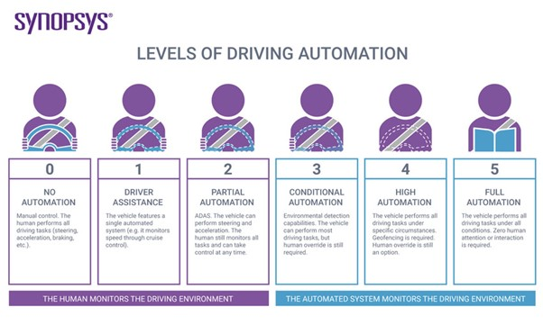

Autonomous Vehicles
by Nathan Askew.
What are autonomous vehicles?
Autonomous vehicles are motorized vehicles that are embedded with a wide variety of sensors and receivers that enable the vehicle to monitor its surroundings and maintain their own speed, direction, lane position and much more. The purpose of autonomous vehicles is to be able to navigate the world just as a normal car would but without any human passenger interaction or assistance at any point and does not even require a passenger to be present.
However, there is not just one type of autonomous vehicle, there is instead a wide spectrum of vehicles with a sliding scale of levels of autonomy. The image bellow shows this scale and gives an overview of what a vehicle is required to be capable of to be classified an autonomous vehicle.
(What is an Autonomous Car? – How Self-Driving Cars Work | Synopsys, 2020)
From this image we can see that the highest level of driving automation is full automation, this is the state of the art technology that is being so heavily researched, funded and tested as it has the potential to have an enormous impact on our world. However there many hurdles to jump to successfully implement this kind of technology. Currently the highest level of autonomous vehicle on the road is the Google Waymo, this vehicle is currently classified as a level 4 autonomous vehicle, but it does however still have limitations. For example, the car is geographically limited as it has been restricted on where it can drive as there are certain areas that are not fully tested. As well as this there is still a driver needed to be present and paying attention due to mostly legal restrictions, technically speaking the vehicle can drive itself with no driver at all. Lastly it also has its top speed limited while it is driving itself to help increase safety but can still be driven faster when under human control.
While these autonomous cars are improving dramatically ever year, there are still several regulations and societal challenges which are causing significant issues for this industry. One of these main issues is that people utilize vehicles of level 2 or 3 as much higher levels, for example on the 19th of November 2018, a self-driving Uber SUV was involved in a fatal crash that killed a jaywalking pedestrian. During this crash the supervisor “was watching an episode of the voice while operating the test vehicle” (Gonzales, 2019). And again, on the 9th of January 2020, a tesla driver (a level 2 autonomous vehicle) was arrested for careless driving as he was flossing with both hands while driving at 135Kmph (Beedham, 2020).
Incidents like these are one of the main factors that are slowing down the progress of autonomous driving cars, as more and more dangerous situations arise due to them, the legal system has to bring in tighter and tighter restrictions to keep people safe from negligent drivers incorrectly using their autonomous vehicles. These restrictions then go on to throttle new innovations as companies are not able to test their new technologies on the road. The other major factor slowing down this sort of innovations is lack of trust from surrounding people, events such as the not mentioned before involving the pedestrian make people feel that these cars are not safe to be out on public roads. This leads to less sales of these vehicles, and more money to be spent on testing.
However, despite all these factors the industry is still moving forward and making new innovations at a rapid rate. Level 4 vehicles are being tested in a wider range of scenarios and are beginning to be implemented into public environments in selected areas and for limited purposes, but “Auto and tech industry experts predict it will be at least 12 years before fully autonomous vehicles are being sold to private buyers” (LeBeau, 2019). So, if you’re holding on for a fully autonomous vehicle at your local dealership, I wouldn’t hold your breath.
Impact of autonomous vehicles:
As autonomous vehicles become more and more common across the world, there is the possibility that there will be large scale changes to how we go about our daily lives. For people that can own their own autonomous vehicles it will result in greater productivity as you will be able to get things done while you are travelling as your car drives you to your location. Another big benefit for individuals would be not having to look for parking as your car will drop you off and head back home.
Effects that could be seen for businesses would be companies like Uber, taxi services and more will most likely greatly invest in autonomous vehicles as it will remove the need for employing drivers for their cars and thus reduce costs, but also means less jobs in these industries. The main challenge for this however will be security concerns as there is the concern that someone could attempt to steal the car, as there is no one there to stop them. On the flip side however, there are also concerns about autonomous cars being hijacked or hacked and taking passengers to wherever the hijackers wish. Hence why GPS tacking systems are going to need to be improved upon as the cars are improved as well.
Not only will it be autonomous cars that will change businesses, but autonomous trucks, vans and other commercial vehicles, as these are the vehicles that spend the most of their life on the road and being used. This could be both of detriment or benefit in a number of ways, as having driverless commercial vehicles will mean less costs on transporting good, people, livestock, other vehicles and much more. However, on the downside it will mean far fewer jobs for truck drivers, delivery drivers, and others that’s work involves driving.
Personal impact of autonomous vehicles:
For me, autonomous vehicles becoming more common will most likely mean that non-autonomous cars will greatly decrease in value. As someone who enjoys driving this sounds absolutely brilliant to me as I would have greater options on cars and at cheaper prices. As well as this it means that those people out there that do not enjoy driving, are simply not capable of driving or are quite appalling at driving (no shortage of those), will have the option to have their car drive for them. This will (hopefully) mean fewer accidents and safer roads for everyone, regardless of who or what is driving your car. Additionally, there will be more parking available as those that have autonomous vehicles will not need to park as their vehicles will be able to go back home or to a charging station while they are at their destination.
As for those around me, I do have a couple of people that I am close to that work in a driving or driving related job, for these people they would have concerns about their job security. However, I feel that even after autonomous vehicles begin to become available to people and businesses, it will still take some time before they are affordable enough for small businesses to begin using them for deliveries or other such work. That and you would still need a person to take the delivery to the door, so in this regard I don’t think there will be need for concern for a good few years yet at the very least.
References:
Beedham, M., 2020. Tesla Driver Arrested For Flossing At 84 Mph On Autopilot. [online] The Next Web. Available at:
Gonzales, R., 2019. NPR Choice Page. [online] Npr.org. Available at:
LeBeau, P., 2019. Relax, Experts Say It's At Least A Decade Before You Can Buy A Self-Driving Vehicle. [online] CNBC. Available at:
Synopsys.com. 2020. What Is An Autonomous Car? – How Self-Driving Cars Work | Synopsys. [online] Available at:
Devitt, M., 2019. How Self-Driving Cars Will Change The World As We Know It. [online] www.robotshop.com. Available at: